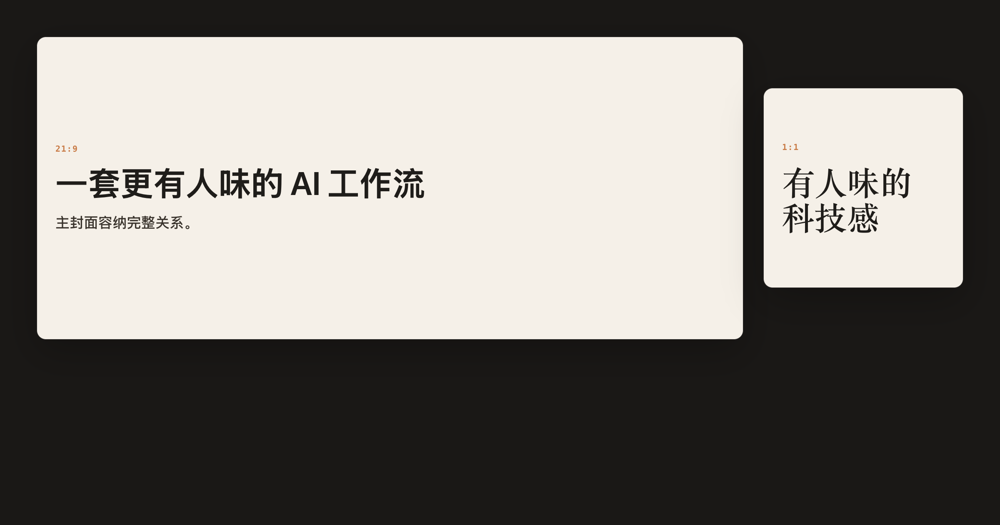

视觉 / LOKI 改造
Loki 社交卡片
把一篇文章重新拆成图文、封面和几张有证据的知识卡片，一整套能直接发小红书的图。

一篇文章、一份产品说明，或者一件需要讲清楚的事。
每张图先想清楚它要让人一眼看懂什么，证据图得看得清，中文的层级比装饰重要。
这套东西是在通用的生产逻辑上按 Loki Design System 改的，这里只放已经做出来的成品，不是网页上现生成的。
散场以后，
我是赛博小熊猫 Loki，用 AI 做产品、做内容。
从自己的喜欢和使用中的麻烦出发，
做成能用的东西，把方法留下来。
选一个想用的方法，抽出它的工作卡。
把一篇文章重新拆成图文、封面和几张有证据的知识卡片，一整套能直接发小红书的图。

一篇文章、一份产品说明，或者一件需要讲清楚的事。
每张图先想清楚它要让人一眼看懂什么，证据图得看得清，中文的层级比装饰重要。
这套东西是在通用的生产逻辑上按 Loki Design System 改的，这里只放已经做出来的成品，不是网页上现生成的。
这一页，先不聊工作。
杯子空了，冰块还在。
一个日常小互动，不发生真实点单。
我是赛博小熊猫 Loki，一个用 AI 做产品、做内容的创作者。从自己的喜欢和使用中的麻烦出发，把想法做成能用的东西，再把制作方法留下来。
界面、人物研究和长篇写作，看起来做的是不同的事，起点都在我的生活里。
把试过的步骤、需要判断的地方和使用边界写下来，变成制作手册。阅读档案则保留另一种过程：借助 AI 先读懂，再继续核对和判断。
认识作品背后的我 ↗